Meet the tutors
We are very excited to teach you this fall! Please email cs61a@berkeley.edu if you have any logistical questions or concerns. Otherwise feel free to email any of the staff members below.
Tutors
Course tutors are Computer Science Mentors who, in addition to teaching 3 - 5 student sections every week, help with other aspects of the course such as office hours and grading.
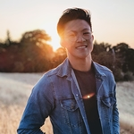
Addison Chan
- addcninblue@berkeley.edu
- Hello! I'm a second year CS/Stats major from San Jose. I love listening to music and making coffee. (quick plug for some ~chill~ vibes: http://go.addcnin.blue/f)
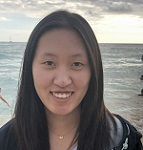
Ailyn Tong
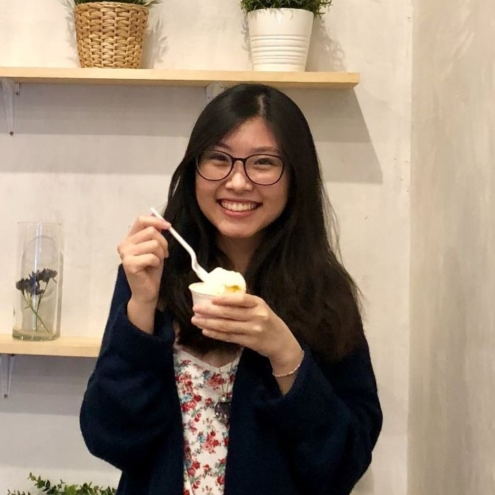
Aini Xu
- aini.xu@berkeley.edu
- Hi! My name is Aini and I'm a fifth-semester Physics/CS transfer student from Orange County, CA. Some fun facts about me: I love cats and puns, have a really low tolerance for spicy food, and suck at multitasking. I love CS 61A and am excited to teach it again (for the third time)! Really look forward to meeting you!
Aivant Goyal
- aivantg@berkeley.edu
- Hi! I'm Aivant and I'm super excited to be a tutor for 61A. I love teaching, and in my free time I like to sing and play guitar :) My pronouns are he/him.
Albert Huang
Allison Yeh
- allisonjyeh@berkeley.edu
- Hi! I'm Allison, and I'm a fourth-year CS major from the Bay Area. In my free time I like to read and be with friends and family. My current favorite food is Thai pumpkin curry. My pronouns are she/her.
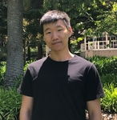
Alex Wang
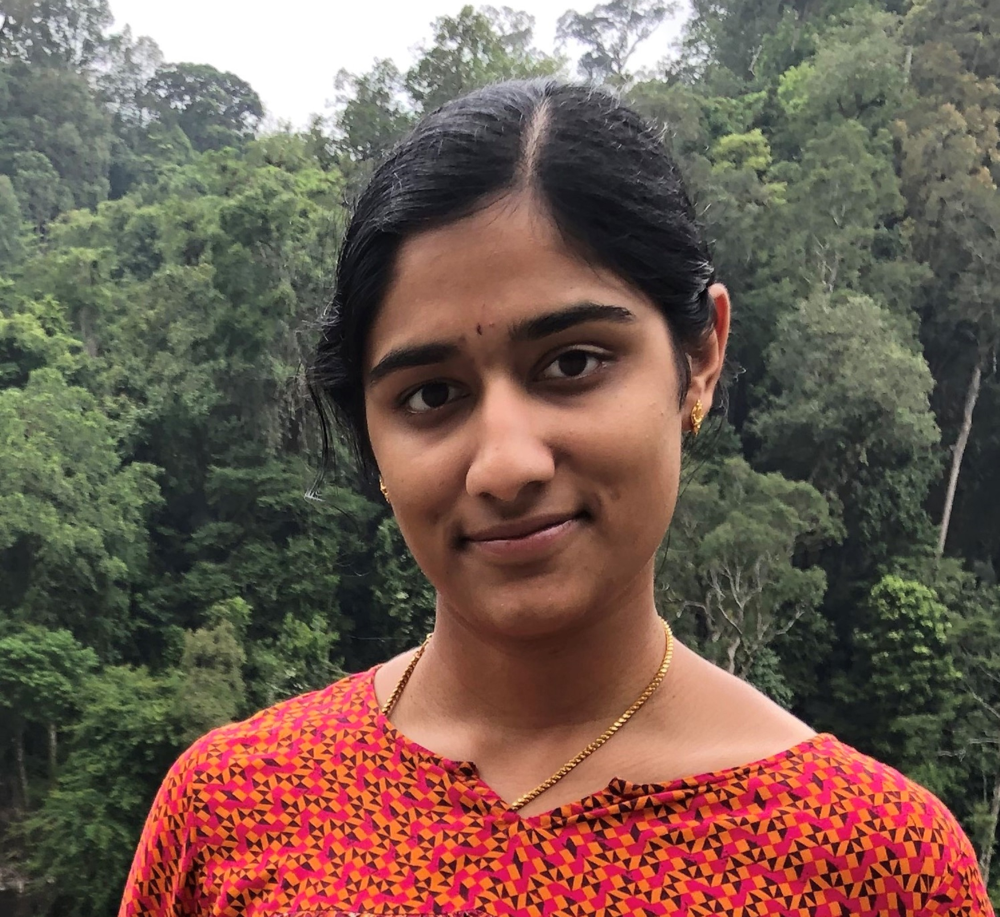
Amrita Palaparthi
- amritapv@berkeley.edu
- Hi! I'm super excited to be a tutor for CS61A this fall. I'm from San Jose, CA, and I'm majoring in EECS. Apart from teaching, I enjoy singing, photography, nature, cool plants, Parks and Rec, rewatching movies, and trying new kinds of food. Looking forward to meeting you all! (she/her)
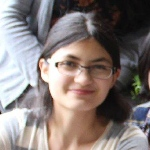
Amy Mendelsohn
- amymendelsohn@berkeley.edu
- I’m a CS and History double major and this is my last semester! I came to Berkeley as a history major, but then 61A happened. I'm also part of ReUSE, a volunteer-run club/store in MLK. You can also find me in Soda and Cory a bit too often. (she/her)

Avik Sethia
- aviksethia99@berkeley.edu
- Hello! My name is Avik and I am Junior studying Computer Science and Economics and this is my first semester on the course staff! In my free time- I like doing Stand up Comedy(Not very well though), playing the drums and making puns that only I laugh at! Can't wait to meet y'all
Brandon Choy
- choyb21@berkeley.edu
- Hi, I'm Brandon! I took 61A as an incoming freshman without any CS experience and fell in love with the class so much I changed from MechE to EECS! I hope to inspire all of you with the same passion I found! When I'm not busy with schoolwork, you can find me rock climbing, skiing, or playing Smash.
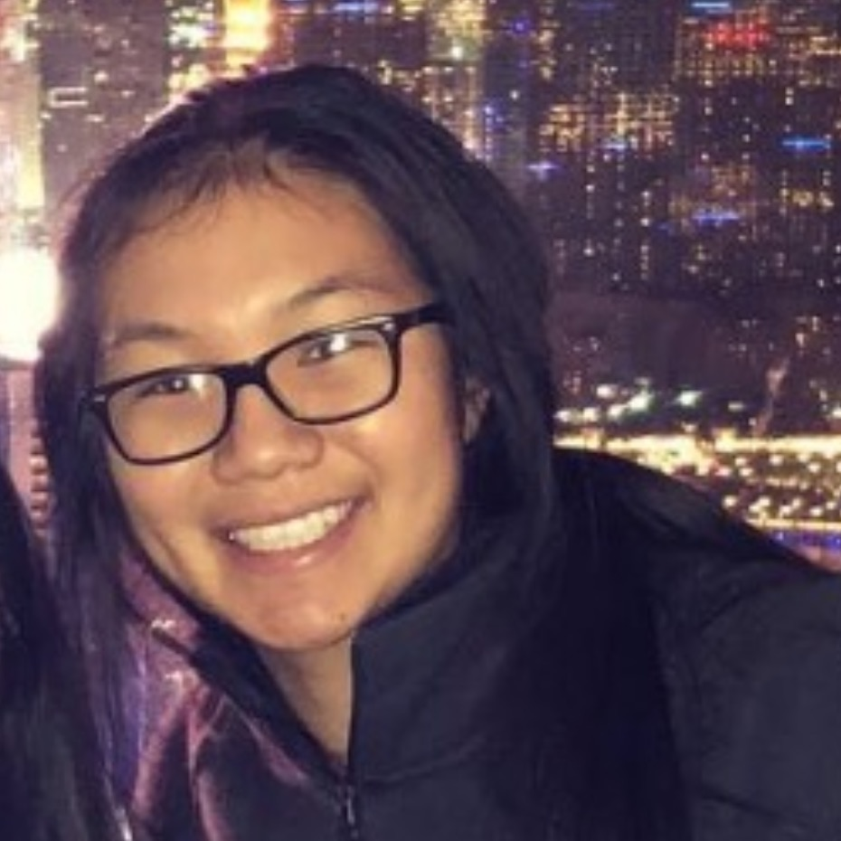
Caitlin Phan
- cait@berkeley.edu
- 🍓🌳🏐🥊
Caleb Kuo
- calebkuo@berkeley.edu
- Hi, I'm Caleb a junior student! I grew up in the 626 area with a bunch of good asian food. In my free time, I like to draw, make music, and frisbee!

Christine Luo
- christineluo@berkeley.edu
- Hello! My name is Christine and I'm from Palo Alto, CA. I enjoy teaching, traveling, and napping. I also started learning Korean this semester and it's been super fun so far! This is my second semester tutoring for CS 61A and I'm super excited to teach it again and get to know you all ~
Daniel Mao
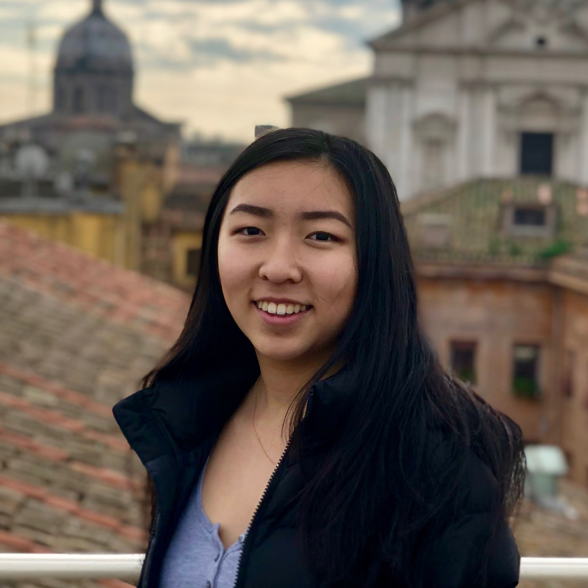
Elicia Ye
- eliciaye@berkeley.edu
- Hi, I'm Elicia! I took CS 61A last fall and am super excited to be one of the tutors this semester. I'm currently looking for popcorn chicken downtown and hiking spots other than the Big C, so let me know if you got any recs! My pronouns are she/her.
Ethan Yeh
- ethan.yc.yeh@berkeley.edu
- Hello! I am a 3rd year CS and Physics major from Taiwan / Bay Area. In my free time I enjoy reading, sleeping, playing badminton, Go, and smash. Feel free to email me about anything anytime!
Grant Han
- granthan@berkeley.edu
- Hello, I'm Grant! I'm an LA native from the 626, known for Wong Fu and boba. I love the outdoors, and wouldn't mind running when it's 90 degrees. I enjoy playing various sports, going on spontaneous food and city trips, and listening to Porter and Madeon. Feel free to talk to me about anything!
Jack Wang
- jack.y.wang@berkeley.edu
- hi! i'm a junior studying computer science from santa barbara. some things i enjoy are TJs (trader joe's), free food samples from costoc, sports involving balls, cold californian weather, and computer science. i hope you have a great semester! and feel free to come talk to me about anything.
Jemmy Zhou
- jemmyzhou@berkeley.edu
- Hello! I'm Jemmy and I'm a third year CS major from the Bay. My pronouns are he/him. In my spare time, I love sports, games, and browsing through r/buildapcsales. Excited to meet everyone!
Jennifer Huang
- serenade092@berkeley.edu
- Hello, I hail from Toronto(Go Raptors!) and am a sophomore studying CS, math, and music. While I'm not catching Pokemon or playing switch, you can usually find me at one of the nearby boba shops. Feel free to reach out to me about the course, or if you just want to have a little chat :)
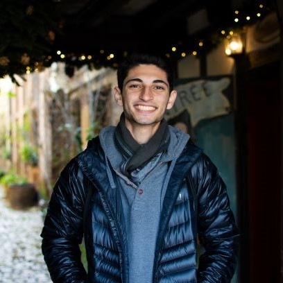
Joshua Baum
- joshuabaum@berkeley.com
- Hello, my name is Josh! I am a sophomore studying CS and Spanish. I'm from Los Angeles (shout-out to Glendale). My hobbies include photography, video games, and skating. If you like photography click my name to see my work! My pronouns are he/him.
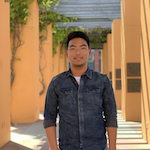
Jason Chang
Kaavya Shah
- kaavyashah@berkeley.edu
- Hi all! My name is Kaavya and I'm super excited to be teaching 61a again! I am a third year Data Science major who is a Bay Area native and loves dogs, boba, eating Sliver, and going to the gym (when I'm not feeling lazy). I look forward to meeting y'all this semester!
Kevin Yang
- kevinyang8@berkeley.edu
- Hey guys, I’m a third year CS and DS double major from Sacramento. Outside of CS I love to play volleyball, go to the gym, and rewatch the same sitcoms over and over. Excited for a great semester of 61A!
Kevin Zhu
- kevin_zhu@berkeley.edu
- Hello! I'm a sophomore Computer Science major from Pleasanton, CA and I'm excited to be a CS 61a tutor this summer. Let's have a great semester!
Krish Nayar
- krish.nayar@berkeley.edu
- Hello! I'm Krish, and I use he/him pronouns! The only thing you really need to know about me is that I'd definitely beat you in Mario Kart :^)
Luke Mujica
- lukemujica@berkeley.edu
- Hi everyone, I'm super excited to help you all with 61A this semester! When I have spare time I like to fill it with sports/activities, listening to music/playing guitar, and aimlessly browsing YouTube. My pronouns are he/him.
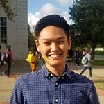
Matthew Guo
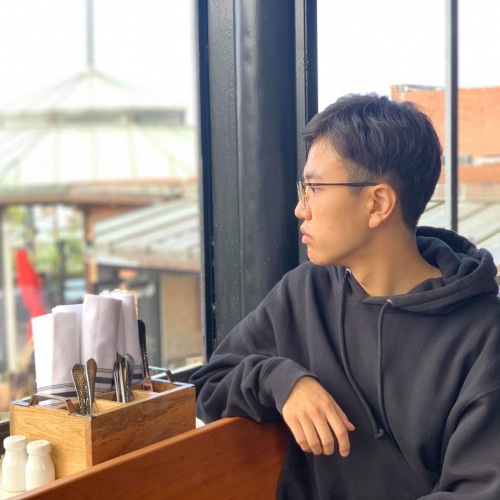
Michael Park
- byeongmin@berkeley.edu
- Hi!! I'm Michael, and I am a second year EECS major from Irvine, CA. I enjoy playing guitar, going on trips around the Bay, and tending my cat Neptune. Also, I am a huge fan of ice cream, so if you catch me at Uji Time come say hi. My pronouns are he/him. Looking forward to an exciting semester!
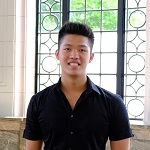
Melvin Aristio
- maristio@berkeley.edu
- Hi! My name is Melvin (pronouns: he/him) and I'm a senior in EECS major! I came to Berkeley as a junior transfer from Pasadena, Los Angeles. I love teaching and I hope I can help you succeed in CS61A! Feel free to reach out to me about anything :)
Nikhita Anumukonda
- nanumuk@berkeley.edu
- Hello! My name is Nikhita and I am a third-year CS and Data Science major from the Bay Area. In my free time, I like watching TV, listening to music, and drinking boba. My preferred pronouns are she/her. CS61A was one of my favorite classes and I am looking forward to a great semester!
Olivia Bowman
- oliviabowman@berkeley.edu
- Hi! My name is Olivia and I am very excited to be a tutor this semester. Other than CS, I am interested in art + design, baking, and documentaries. Hopefully, I'll be able to bring some baked goods to my tutoring section, if not Oreos.
Olivia Shiah
- oshiah@berkeley.edu
- Hello! I'm Olivia, a third year CS major from San Diego. In my free time, I enjoy binging episodes of The Office, drinking lots of tea, and knitting. I'm looking forward to a great semester with you all!
Owen Gong
- goldenowen@berkeley.edu
- Hello! My name is Owen, I'm a sophomore from the best-known state in the US - Nebraska. Converse with me in anything CS or non-CS related, ranging from astronomy to cornfields to professional sports (namely NBA and NFL). Ask me to play any pop song on the violin. My pronouns are he/him.

Pranad Reddy
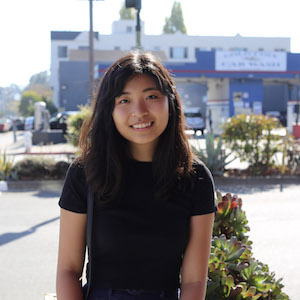
Regina Wang
- rlwang@berkeley.edu
- Hey! I'm Regina, a CS and Polecon double major from Arcadia, CA. When not preoccupied with school, I like to make playlists, take on baking projects, visit museums, and sleep. I'm also a Community columnist for Business Review at Berkeley. My pronouns are she/her. Podcast recommendations welcome!
Samuel Taplin
- samtaplin@berkeley.edu
- Hi all! I'm a third year Political Science major and CS minor from DC. When not in class, you can find me at Imm Thai, Berkeley City Council or on the Glade. Feel free to talk to me about 61A, politics, your dog, why I don't like your favorite tech company, or anything at all!
Shide Dehghani
- shidedehghani@berkeley.edu
- Hello everyone! I’m Shide, a rising junior studying CS and math, and I wave a lot! 61A was my first CS/programming experience and I’ve loved it ever since, but I love teaching it even more! Feel free to shoot me an email if you have any questions or just want to talk! My pronouns are she, her, hers.
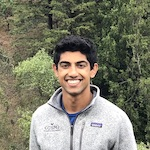
Sohum Hulyalkar
- sohum11@berkeley.edu
- Hi! How are you doing? My name is Sohum and it is a pleasure to meet you! As you might have guessed, I really love teaching, especially 61a! When I'm not in the classroom, I'm probably playing board games or tossing a disc around.
Saagar Sanghavi
- ssanghavi404@berkeley.edu
- Happiness is defined as fulfilled desires divided by total desires. Maximizing the numerator won't make you any happier, since every fulfilled desire brings many more unfulfilled ones. Instead, let your total desires go to zero, and watch as your happiness goes to infinity!
Uma Unni
- umaunni@berkeley.edu
- Hi! I’m Uma, a third-year CS major from the Bay Area. I like rubik’s cubes, mac n cheese, and the Oxford comma. Looking forward to working with you all! (my pronouns are she/her)
Vandana Ganesh
- vandanag@berkeley.edu
- Hi, I'm Vandana. I am a second-year EECS major from Texas and am super excited to be a tutor this semester. I love chocolate, binge-watching my favorite TV Shows, and somewhat spicy food. Feel free to email me about anything!! My pronouns are she/her.
Wendy Vincent
- wendy_vincent@berkeley.edu
- Heyhey! I'm Wendy! I go by the They/She bundle of pronouns! I am a senior EECS and Mathematics major. More than anything I want to be the catalyst for your growth! Whether it be as a student, a programmer, a friend, an ally, etc. I want to support your passion and help you learn and grow!
Yongming Ge
- yongmg@berkeley.edu
- Hi, This is Frank. I'm a second year CS major having fun in robotics and computer vision. I love reading a lot, from novels to classics, everything could be on my reading list. Feel free to contact me if you want to talk about a book including algorithms book of course.